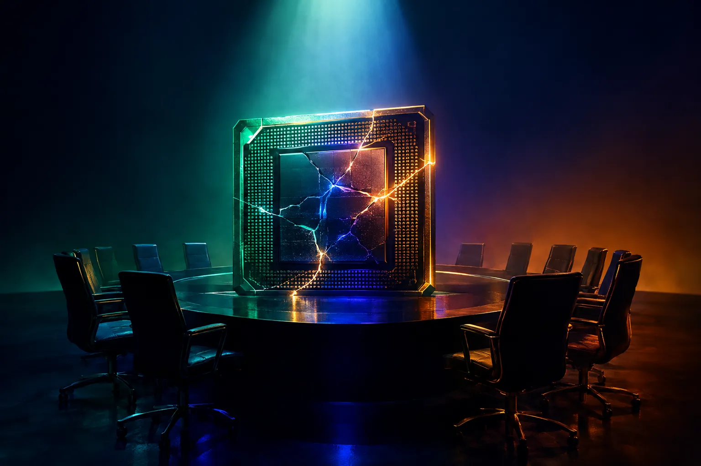

Impact Capital VC
Perspectives IA
Analyses d'Impact Capital VC sur le capital-risque, l'essor de l'IA et la montée de l'IA agentique.

L'enquête sur Jensen Huang : ce que cela pourrait signifier pour l'industrie de l'IALe conseil d'administration de Nvidia enquête sur son CEO Jensen Huang après qu'il a reconnu une liaison. Nous évaluons les implications pour l'IA : personne clé, contrôle des exportations et chaîne d'approvisionnement. Le supercycle du capital IA : où va vraiment l'argent du capital-risqueL'IA domine désormais le capital-risque. Nous cartographions les flux — infrastructure, modèles, applications — et expliquons pourquoi la couche applicative est sous-évaluée. Pourquoi l'IA agentique est la prochaine frontière du capital-risqueLes chatbots répondent aux questions ; les agents accomplissent le travail. Pourquoi l'IA agentique change l'économie du logiciel et ce que les investisseurs doivent rechercher.
Au-delà du modèle de fondation : bâtir des avantages durables dans la couche applicativeSi tout le monde peut appeler le même modèle, d'où vient la défendabilité ? Des données, de la profondeur des workflows et de la distribution dans des niches atypiques.
Pourquoi l'IA agentique est la prochaine frontière du capital-risqueLes chatbots répondent aux questions ; les agents accomplissent le travail. Pourquoi l'IA agentique change l'économie du logiciel et ce que les investisseurs doivent rechercher.
Au-delà du modèle de fondation : bâtir des avantages durables dans la couche applicativeSi tout le monde peut appeler le même modèle, d'où vient la défendabilité ? Des données, de la profondeur des workflows et de la distribution dans des niches atypiques. Économie du calcul : comment la baisse du coût d'inférence transforme les startups d'IAL'inférence devient moins chère tandis que l'entraînement de pointe coûte toujours plus. Ce que ce découplage implique pour les marges et la stratégie.
Économie du calcul : comment la baisse du coût d'inférence transforme les startups d'IAL'inférence devient moins chère tandis que l'entraînement de pointe coûte toujours plus. Ce que ce découplage implique pour les marges et la stratégie. De la recherche aux réponses : le GEO et l'AEO, nouvelle catégorie d'investissementQuand les gens interrogent des assistants d'IA au lieu de chercher, les marques ont besoin d'optimisation pour moteurs génératifs et moteurs de réponse. Pourquoi c'est un nouveau marché.
Discipline de valorisation dans le boom de l'IA : les leçons des cycles passésChaque boom technologique produit des géants durables et des erreurs coûteuses. Comment nous restons disciplinés en investissant dans l'IA.
Le corridor asiatique de l'IA : pourquoi Singapour est une rampe de lancement pour les startups agentiquesSingapour combine profondeur de recherche, clarté réglementaire et accès à des marchés asiatiques variés — des conditions idéales pour l'IA agentique.
De la recherche aux réponses : le GEO et l'AEO, nouvelle catégorie d'investissementQuand les gens interrogent des assistants d'IA au lieu de chercher, les marques ont besoin d'optimisation pour moteurs génératifs et moteurs de réponse. Pourquoi c'est un nouveau marché.
Discipline de valorisation dans le boom de l'IA : les leçons des cycles passésChaque boom technologique produit des géants durables et des erreurs coûteuses. Comment nous restons disciplinés en investissant dans l'IA.
Le corridor asiatique de l'IA : pourquoi Singapour est une rampe de lancement pour les startups agentiquesSingapour combine profondeur de recherche, clarté réglementaire et accès à des marchés asiatiques variés — des conditions idéales pour l'IA agentique. Fondateurs scientifiques : pourquoi les chercheurs bâtissent les meilleures entreprises d'IA agentiqueLa recherche évaluée par les pairs devient un avantage commercial. Pourquoi nous cherchons des fondateurs qui publient autant qu'ils livrent.
Fondateurs scientifiques : pourquoi les chercheurs bâtissent les meilleures entreprises d'IA agentiqueLa recherche évaluée par les pairs devient un avantage commercial. Pourquoi nous cherchons des fondateurs qui publient autant qu'ils livrent. L'IA agentique pour les PME : automatiser la croissance à l'internationalLes petites et moyennes entreprises pourraient être les grandes gagnantes des agents d'IA. Comment des agents peuvent jouer le rôle de service marketing et export.
L'IA responsable comme critère d'investissementGouvernance, transparence et confidentialité ne sont pas que des coûts de conformité. Pourquoi nous considérons l'IA responsable comme une source de valeur à long terme.
L'IA agentique pour les PME : automatiser la croissance à l'internationalLes petites et moyennes entreprises pourraient être les grandes gagnantes des agents d'IA. Comment des agents peuvent jouer le rôle de service marketing et export.
L'IA responsable comme critère d'investissementGouvernance, transparence et confidentialité ne sont pas que des coûts de conformité. Pourquoi nous considérons l'IA responsable comme une source de valeur à long terme.